x = 2
x <- 4
2+2 [1] 4y <- x^5
y[1] 1024If you are new to R you can have a short dive into its main features by working through this tutorial. If you had learnt programming in another computer language, you will be able to skim over this tutorial to find the main differences from what you have learnt to how things are done in R.
Variables can be any sequence of letter and numbers, but # it cannot start with a number
x = 2
x <- 4
2+2 [1] 4y <- x^5
y[1] 1024Please note that you can comment code by using the # character.
Let’s create vectors.
# Introduction to vectors
v1 <- c(2,3,6,12)
v2 <- 1:100
length(v2)[1] 100v2 [1] 1 2 3 4 5 6 7 8 9 10 11 12 13 14 15 16 17 18
[19] 19 20 21 22 23 24 25 26 27 28 29 30 31 32 33 34 35 36
[37] 37 38 39 40 41 42 43 44 45 46 47 48 49 50 51 52 53 54
[55] 55 56 57 58 59 60 61 62 63 64 65 66 67 68 69 70 71 72
[73] 73 74 75 76 77 78 79 80 81 82 83 84 85 86 87 88 89 90
[91] 91 92 93 94 95 96 97 98 99 100v3 <- seq(1,100,5) # call without naming arguments
v3 [1] 1 6 11 16 21 26 31 36 41 46 51 56 61 66 71 76 81 86 91 96v3 <- seq(from=1,to=100,by=5) # call with names of arguments
v3 [1] 1 6 11 16 21 26 31 36 41 46 51 56 61 66 71 76 81 86 91 96v3 <- seq(to=100,by=5) # call skipping the first argument
#and using the default value 1 - see help(seq)
v3 [1] 1 6 11 16 21 26 31 36 41 46 51 56 61 66 71 76 81 86 91 96v3 <- seq(by=5,to=100) # call by arguments and change order or argumentsHow to index vectors?
# Indexing vectors
v3[3] #uses square brackets to obtain the third element of the vector[1] 11v3>20 # produce a vector of boolean values that are TRUE when [1] FALSE FALSE FALSE FALSE TRUE TRUE TRUE TRUE TRUE TRUE TRUE TRUE
[13] TRUE TRUE TRUE TRUE TRUE TRUE TRUE TRUE #v3 is greater than 20
v3[v3>20] # select from v3 all the values that are greater than 20 [1] 21 26 31 36 41 46 51 56 61 66 71 76 81 86 91 96v4<-c(1,2,3,4,5)
v4[c(FALSE,TRUE,FALSE,TRUE,FALSE)] #select from v4 the second and fourth element[1] 2 4v3[1:10] # first ten elements [1] 1 6 11 16 21 26 31 36 41 46v3[-1] # dropping first element [1] 6 11 16 21 26 31 36 41 46 51 56 61 66 71 76 81 86 91 96head(v2) # prints the first few elements of v2[1] 1 2 3 4 5 6tail(v2) # prints the last few elements of v2[1] 95 96 97 98 99 100which(v3 == 26) # returns the position of v3 that equals 26[1] 6What kind of numerical operations are possible on vectors?
2^v2 [1] 2.000000e+00 4.000000e+00 8.000000e+00 1.600000e+01 3.200000e+01
[6] 6.400000e+01 1.280000e+02 2.560000e+02 5.120000e+02 1.024000e+03
[11] 2.048000e+03 4.096000e+03 8.192000e+03 1.638400e+04 3.276800e+04
[16] 6.553600e+04 1.310720e+05 2.621440e+05 5.242880e+05 1.048576e+06
[21] 2.097152e+06 4.194304e+06 8.388608e+06 1.677722e+07 3.355443e+07
[26] 6.710886e+07 1.342177e+08 2.684355e+08 5.368709e+08 1.073742e+09
[31] 2.147484e+09 4.294967e+09 8.589935e+09 1.717987e+10 3.435974e+10
[36] 6.871948e+10 1.374390e+11 2.748779e+11 5.497558e+11 1.099512e+12
[41] 2.199023e+12 4.398047e+12 8.796093e+12 1.759219e+13 3.518437e+13
[46] 7.036874e+13 1.407375e+14 2.814750e+14 5.629500e+14 1.125900e+15
[51] 2.251800e+15 4.503600e+15 9.007199e+15 1.801440e+16 3.602880e+16
[56] 7.205759e+16 1.441152e+17 2.882304e+17 5.764608e+17 1.152922e+18
[61] 2.305843e+18 4.611686e+18 9.223372e+18 1.844674e+19 3.689349e+19
[66] 7.378698e+19 1.475740e+20 2.951479e+20 5.902958e+20 1.180592e+21
[71] 2.361183e+21 4.722366e+21 9.444733e+21 1.888947e+22 3.777893e+22
[76] 7.555786e+22 1.511157e+23 3.022315e+23 6.044629e+23 1.208926e+24
[81] 2.417852e+24 4.835703e+24 9.671407e+24 1.934281e+25 3.868563e+25
[86] 7.737125e+25 1.547425e+26 3.094850e+26 6.189700e+26 1.237940e+27
[91] 2.475880e+27 4.951760e+27 9.903520e+27 1.980704e+28 3.961408e+28
[96] 7.922816e+28 1.584563e+29 3.169127e+29 6.338253e+29 1.267651e+30log(v2) [1] 0.0000000 0.6931472 1.0986123 1.3862944 1.6094379 1.7917595 1.9459101
[8] 2.0794415 2.1972246 2.3025851 2.3978953 2.4849066 2.5649494 2.6390573
[15] 2.7080502 2.7725887 2.8332133 2.8903718 2.9444390 2.9957323 3.0445224
[22] 3.0910425 3.1354942 3.1780538 3.2188758 3.2580965 3.2958369 3.3322045
[29] 3.3672958 3.4011974 3.4339872 3.4657359 3.4965076 3.5263605 3.5553481
[36] 3.5835189 3.6109179 3.6375862 3.6635616 3.6888795 3.7135721 3.7376696
[43] 3.7612001 3.7841896 3.8066625 3.8286414 3.8501476 3.8712010 3.8918203
[50] 3.9120230 3.9318256 3.9512437 3.9702919 3.9889840 4.0073332 4.0253517
[57] 4.0430513 4.0604430 4.0775374 4.0943446 4.1108739 4.1271344 4.1431347
[64] 4.1588831 4.1743873 4.1896547 4.2046926 4.2195077 4.2341065 4.2484952
[71] 4.2626799 4.2766661 4.2904594 4.3040651 4.3174881 4.3307333 4.3438054
[78] 4.3567088 4.3694479 4.3820266 4.3944492 4.4067192 4.4188406 4.4308168
[85] 4.4426513 4.4543473 4.4659081 4.4773368 4.4886364 4.4998097 4.5108595
[92] 4.5217886 4.5325995 4.5432948 4.5538769 4.5643482 4.5747110 4.5849675
[99] 4.5951199 4.6051702v5 <- 101:200
v5/v2 [1] 101.000000 51.000000 34.333333 26.000000 21.000000 17.666667
[7] 15.285714 13.500000 12.111111 11.000000 10.090909 9.333333
[13] 8.692308 8.142857 7.666667 7.250000 6.882353 6.555556
[19] 6.263158 6.000000 5.761905 5.545455 5.347826 5.166667
[25] 5.000000 4.846154 4.703704 4.571429 4.448276 4.333333
[31] 4.225806 4.125000 4.030303 3.941176 3.857143 3.777778
[37] 3.702703 3.631579 3.564103 3.500000 3.439024 3.380952
[43] 3.325581 3.272727 3.222222 3.173913 3.127660 3.083333
[49] 3.040816 3.000000 2.960784 2.923077 2.886792 2.851852
[55] 2.818182 2.785714 2.754386 2.724138 2.694915 2.666667
[61] 2.639344 2.612903 2.587302 2.562500 2.538462 2.515152
[67] 2.492537 2.470588 2.449275 2.428571 2.408451 2.388889
[73] 2.369863 2.351351 2.333333 2.315789 2.298701 2.282051
[79] 2.265823 2.250000 2.234568 2.219512 2.204819 2.190476
[85] 2.176471 2.162791 2.149425 2.136364 2.123596 2.111111
[91] 2.098901 2.086957 2.075269 2.063830 2.052632 2.041667
[97] 2.030928 2.020408 2.010101 2.000000#Using strings in R
mystring <- "Ecology"
vstrg <- c("Anna", "Peter", "Xavier")
vstrg[2][1] "Peter"m <- matrix(5,3,2)
m [,1] [,2]
[1,] 5 5
[2,] 5 5
[3,] 5 5m2 <- matrix(1:6,3,2)
m2 [,1] [,2]
[1,] 1 4
[2,] 2 5
[3,] 3 6t(m2) # transposes matrix [,1] [,2] [,3]
[1,] 1 2 3
[2,] 4 5 6x <- 1:4
y <- 5:8
m3<-cbind(x,y)
m3 x y
[1,] 1 5
[2,] 2 6
[3,] 3 7
[4,] 4 8m4<-rbind(x,y)
m4 [,1] [,2] [,3] [,4]
x 1 2 3 4
y 5 6 7 8# Indexing matrices
m3[3,2] #element in row 3 and column 2y
7 m3[1,] #entire first rowx y
1 5 m3[,1] #entire first column[1] 1 2 3 4colnames(m3)<-c("col1","col2")
m3 col1 col2
[1,] 1 5
[2,] 2 6
[3,] 3 7
[4,] 4 8m3[,"col2"][1] 5 6 7 8# Lists in R
mylist <- list(elem1=m,elem2=v2,elem3="my list")
mylist$elem2 [1] 1 2 3 4 5 6 7 8 9 10 11 12 13 14 15 16 17 18
[19] 19 20 21 22 23 24 25 26 27 28 29 30 31 32 33 34 35 36
[37] 37 38 39 40 41 42 43 44 45 46 47 48 49 50 51 52 53 54
[55] 55 56 57 58 59 60 61 62 63 64 65 66 67 68 69 70 71 72
[73] 73 74 75 76 77 78 79 80 81 82 83 84 85 86 87 88 89 90
[91] 91 92 93 94 95 96 97 98 99 100# Dataframes
df <- as.data.frame(m3)
df$col1[1] 1 2 3 4#making plots in R
plot(v2,v2)
plot(v2,v2^2)
plot(v2,v2^2,type="l")
plot(v2,v2^2,type="l",col="red")
plot(v2,v2^2,type="l",col="red",main="My beautiful plot")
plot(v2,v2^2,type="l",col="red",main="My beautiful plot",xlab="x",
ylab="x^2")
lines(v2,v2^3,col="blue")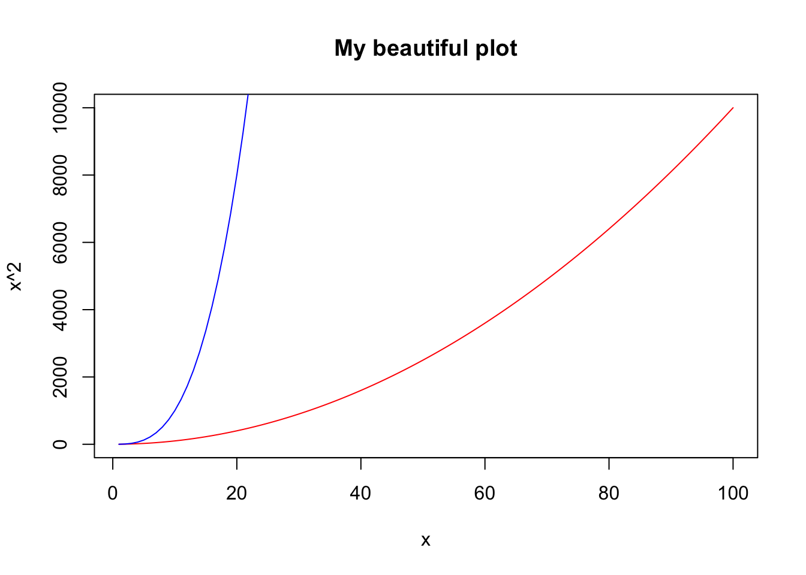
# FOR loops
for (k in 1:10) # for k =1, 2, 3, 4, 5,...10
print (k^2) #do this[1] 1
[1] 4
[1] 9
[1] 16
[1] 25
[1] 36
[1] 49
[1] 64
[1] 81
[1] 100R <- 1.2
n <- 1
print(n[1])[1] 1for (t in 1:100)
{
n[t+1] <- R*n[t]
print(n[t+1])
}[1] 1.2
[1] 1.44
[1] 1.728
[1] 2.0736
[1] 2.48832
[1] 2.985984
[1] 3.583181
[1] 4.299817
[1] 5.15978
[1] 6.191736
[1] 7.430084
[1] 8.9161
[1] 10.69932
[1] 12.83918
[1] 15.40702
[1] 18.48843
[1] 22.18611
[1] 26.62333
[1] 31.948
[1] 38.3376
[1] 46.00512
[1] 55.20614
[1] 66.24737
[1] 79.49685
[1] 95.39622
[1] 114.4755
[1] 137.3706
[1] 164.8447
[1] 197.8136
[1] 237.3763
[1] 284.8516
[1] 341.8219
[1] 410.1863
[1] 492.2235
[1] 590.6682
[1] 708.8019
[1] 850.5622
[1] 1020.675
[1] 1224.81
[1] 1469.772
[1] 1763.726
[1] 2116.471
[1] 2539.765
[1] 3047.718
[1] 3657.262
[1] 4388.714
[1] 5266.457
[1] 6319.749
[1] 7583.698
[1] 9100.438
[1] 10920.53
[1] 13104.63
[1] 15725.56
[1] 18870.67
[1] 22644.8
[1] 27173.76
[1] 32608.52
[1] 39130.22
[1] 46956.26
[1] 56347.51
[1] 67617.02
[1] 81140.42
[1] 97368.5
[1] 116842.2
[1] 140210.6
[1] 168252.8
[1] 201903.3
[1] 242284
[1] 290740.8
[1] 348889
[1] 418666.7
[1] 502400.1
[1] 602880.1
[1] 723456.1
[1] 868147.4
[1] 1041777
[1] 1250132
[1] 1500159
[1] 1800190
[1] 2160228
[1] 2592274
[1] 3110729
[1] 3732875
[1] 4479450
[1] 5375340
[1] 6450408
[1] 7740489
[1] 9288587
[1] 11146304
[1] 13375565
[1] 16050678
[1] 19260814
[1] 23112977
[1] 27735572
[1] 33282687
[1] 39939224
[1] 47927069
[1] 57512482
[1] 69014979
[1] 82817975R <- 1.2
n <- 1
for (t in 1:100)
n[t+1] <- R*n[t]
# IF conditional statement
# logical operators
# == equal to
# > greater than
# < smaller than
# >= greater or equal
# <= smaller or equal
# != different from
# && and
# || or
if (3>2) print ("yes")[1] "yes"if (3==2) print ("yes") else print("no")[1] "no"if ((3>2)&&(4>5)) print ("yes")
for (k in 1:10) # for k =1, 2, 3, 4, 5,...10
if (k^2>20) print (k^2) [1] 25
[1] 36
[1] 49
[1] 64
[1] 81
[1] 100# creating FUNCTIONS in r
pythagoras <- function (c1,c2)
{
h <- sqrt (c1^2 + c2^2)
return (h)
}
pythagoras(1,1)[1] 1.414214pythagoras(5,5)[1] 7.071068pythagoras(10,1)[1] 10.04988# regression in R
help(lm)
x <- c(1,2,3,4)
y <- c(1.1,2.3,2.9,4.1)
plot(x,y)
myreg<-lm(y ~ x)
summary(myreg)
Call:
lm(formula = y ~ x)
Residuals:
1 2 3 4
-0.06 0.18 -0.18 0.06
Coefficients:
Estimate Std. Error t value Pr(>|t|)
(Intercept) 0.20000 0.23238 0.861 0.48012
x 0.96000 0.08485 11.314 0.00772 **
---
Signif. codes: 0 '***' 0.001 '**' 0.01 '*' 0.05 '.' 0.1 ' ' 1
Residual standard error: 0.1897 on 2 degrees of freedom
Multiple R-squared: 0.9846, Adjusted R-squared: 0.9769
F-statistic: 128 on 1 and 2 DF, p-value: 0.007722abline(myreg)
random1d<-function(tmax)
{
x<-0
for (t in 1:tmax)
{
r<-runif(1)
if (r<1/2)
x[t+1]<-x[t]+1 else
x[t+1]<-x[t]-1
}
return(x)
}
plot(random1d(100))
tmax<-10000
lastx<-0
for (i in 1:1000)
{
x<-random1d(tmax)
lastx[i]<-x[tmax]
}
hist(lastx)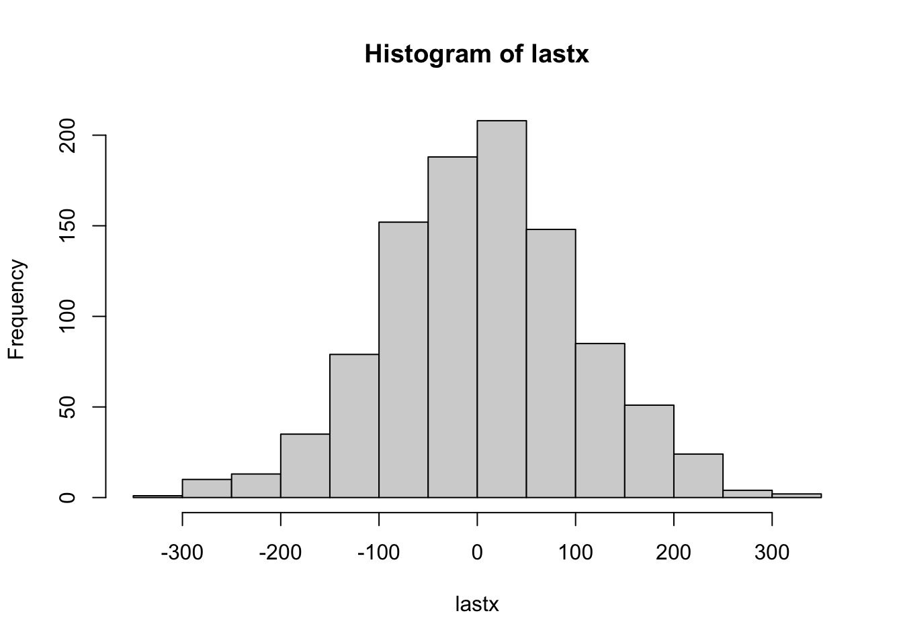
mean(lastx)[1] 0.79d<-sqrt(lastx^2)
hist(d)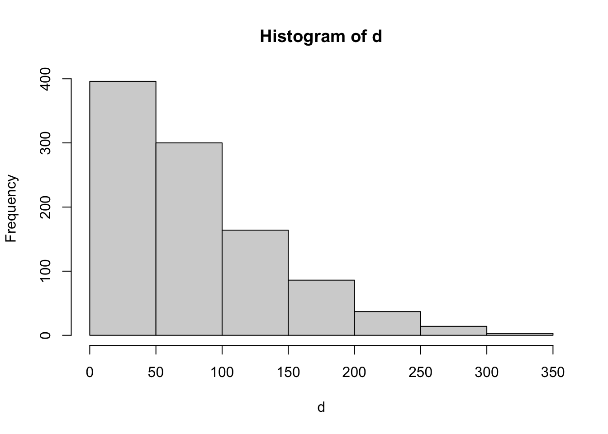
mean(d)[1] 77.34median(d)[1] 65max(d)[1] 321hist(d[d<20],breaks=c(1:20))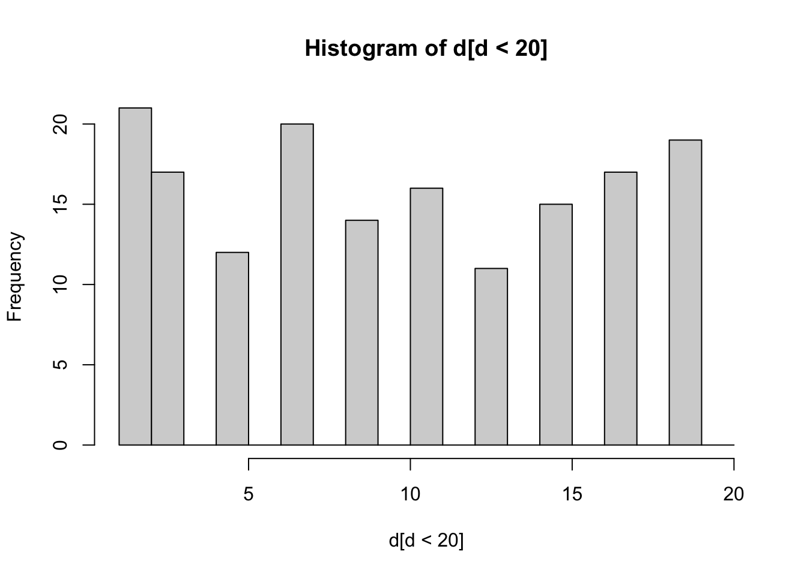
Use of apply instead of for loops.
# a recursive function that calculates a factorial
myfun <- function(x)
{
if (x==1)
return (1)
else return(x*myfun(x-1))
}The following does not work
myfun(1:10) # does not workOne needs to do a for loop or use apply
#option1 - with a for loop
start_time <- Sys.time()
y<-0
for (i in 1:100)
y[i]<-myfun(i)
end_time <- Sys.time()
end_time-start_timeTime difference of 0.005800009 secsy [1] 1.000000e+00 2.000000e+00 6.000000e+00 2.400000e+01 1.200000e+02
[6] 7.200000e+02 5.040000e+03 4.032000e+04 3.628800e+05 3.628800e+06
[11] 3.991680e+07 4.790016e+08 6.227021e+09 8.717829e+10 1.307674e+12
[16] 2.092279e+13 3.556874e+14 6.402374e+15 1.216451e+17 2.432902e+18
[21] 5.109094e+19 1.124001e+21 2.585202e+22 6.204484e+23 1.551121e+25
[26] 4.032915e+26 1.088887e+28 3.048883e+29 8.841762e+30 2.652529e+32
[31] 8.222839e+33 2.631308e+35 8.683318e+36 2.952328e+38 1.033315e+40
[36] 3.719933e+41 1.376375e+43 5.230226e+44 2.039788e+46 8.159153e+47
[41] 3.345253e+49 1.405006e+51 6.041526e+52 2.658272e+54 1.196222e+56
[46] 5.502622e+57 2.586232e+59 1.241392e+61 6.082819e+62 3.041409e+64
[51] 1.551119e+66 8.065818e+67 4.274883e+69 2.308437e+71 1.269640e+73
[56] 7.109986e+74 4.052692e+76 2.350561e+78 1.386831e+80 8.320987e+81
[61] 5.075802e+83 3.146997e+85 1.982608e+87 1.268869e+89 8.247651e+90
[66] 5.443449e+92 3.647111e+94 2.480036e+96 1.711225e+98 1.197857e+100
[71] 8.504786e+101 6.123446e+103 4.470115e+105 3.307885e+107 2.480914e+109
[76] 1.885495e+111 1.451831e+113 1.132428e+115 8.946182e+116 7.156946e+118
[81] 5.797126e+120 4.753643e+122 3.945524e+124 3.314240e+126 2.817104e+128
[86] 2.422710e+130 2.107757e+132 1.854826e+134 1.650796e+136 1.485716e+138
[91] 1.352002e+140 1.243841e+142 1.156773e+144 1.087366e+146 1.032998e+148
[96] 9.916779e+149 9.619276e+151 9.426890e+153 9.332622e+155 9.332622e+157#option 2 - with apply
start_time <- Sys.time()
y<-sapply(1:100,myfun)
end_time <- Sys.time()
end_time-start_timeTime difference of 0.002110004 secsy [1] 1.000000e+00 2.000000e+00 6.000000e+00 2.400000e+01 1.200000e+02
[6] 7.200000e+02 5.040000e+03 4.032000e+04 3.628800e+05 3.628800e+06
[11] 3.991680e+07 4.790016e+08 6.227021e+09 8.717829e+10 1.307674e+12
[16] 2.092279e+13 3.556874e+14 6.402374e+15 1.216451e+17 2.432902e+18
[21] 5.109094e+19 1.124001e+21 2.585202e+22 6.204484e+23 1.551121e+25
[26] 4.032915e+26 1.088887e+28 3.048883e+29 8.841762e+30 2.652529e+32
[31] 8.222839e+33 2.631308e+35 8.683318e+36 2.952328e+38 1.033315e+40
[36] 3.719933e+41 1.376375e+43 5.230226e+44 2.039788e+46 8.159153e+47
[41] 3.345253e+49 1.405006e+51 6.041526e+52 2.658272e+54 1.196222e+56
[46] 5.502622e+57 2.586232e+59 1.241392e+61 6.082819e+62 3.041409e+64
[51] 1.551119e+66 8.065818e+67 4.274883e+69 2.308437e+71 1.269640e+73
[56] 7.109986e+74 4.052692e+76 2.350561e+78 1.386831e+80 8.320987e+81
[61] 5.075802e+83 3.146997e+85 1.982608e+87 1.268869e+89 8.247651e+90
[66] 5.443449e+92 3.647111e+94 2.480036e+96 1.711225e+98 1.197857e+100
[71] 8.504786e+101 6.123446e+103 4.470115e+105 3.307885e+107 2.480914e+109
[76] 1.885495e+111 1.451831e+113 1.132428e+115 8.946182e+116 7.156946e+118
[81] 5.797126e+120 4.753643e+122 3.945524e+124 3.314240e+126 2.817104e+128
[86] 2.422710e+130 2.107757e+132 1.854826e+134 1.650796e+136 1.485716e+138
[91] 1.352002e+140 1.243841e+142 1.156773e+144 1.087366e+146 1.032998e+148
[96] 9.916779e+149 9.619276e+151 9.426890e+153 9.332622e+155 9.332622e+157Selecting a subset from a matrix and applying a function to a column of that subset
Florida <- read.csv("Labs/Florida.csv")
# number of species for year 1970 and route 20
x=tapply(Florida$Abundance,Florida$Route==20 & Florida$Year==1970, length)
#applies length() to Florida$Abundance but by two levels, when the formula is true
#and when the formula is false
# matrix with number of species per route and per year
out<-tapply(Florida$Abundance,list(Florida$Route,Florida$Year), length)
plot(out[10,])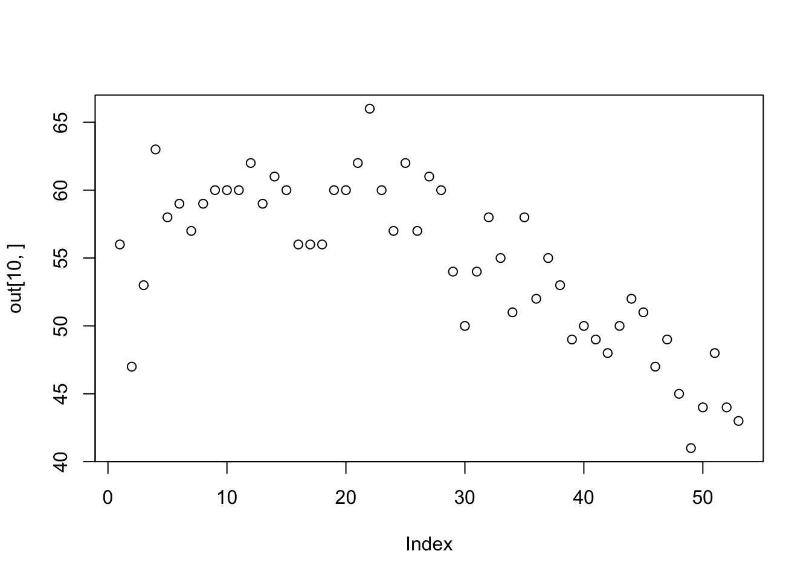
shannon<-function(x)
{
p<-x/sum(x)
- sum(p*log(p))
}
out<-tapply(Florida$Abundance,list(Florida$Route,Florida$Year), shannon)
plot(out[10,])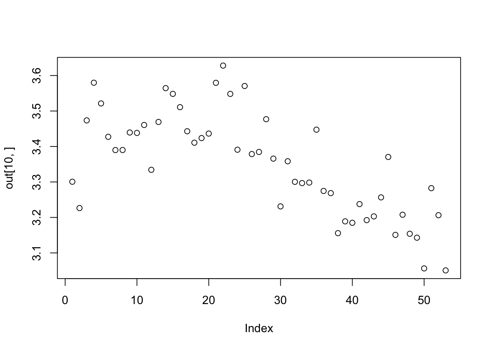
library(tidyverse)── Attaching core tidyverse packages ──────────────────────── tidyverse 2.0.0 ──
✔ dplyr 1.1.4 ✔ readr 2.1.5
✔ forcats 1.0.1 ✔ stringr 1.5.2
✔ ggplot2 4.0.0 ✔ tibble 3.3.0
✔ lubridate 1.9.4 ✔ tidyr 1.3.1
✔ purrr 1.2.0
── Conflicts ────────────────────────────────────────── tidyverse_conflicts() ──
✖ dplyr::filter() masks stats::filter()
✖ dplyr::lag() masks stats::lag()
ℹ Use the conflicted package (<http://conflicted.r-lib.org/>) to force all conflicts to become errors#our first pipe
x<-rnorm(1000)
hist(x)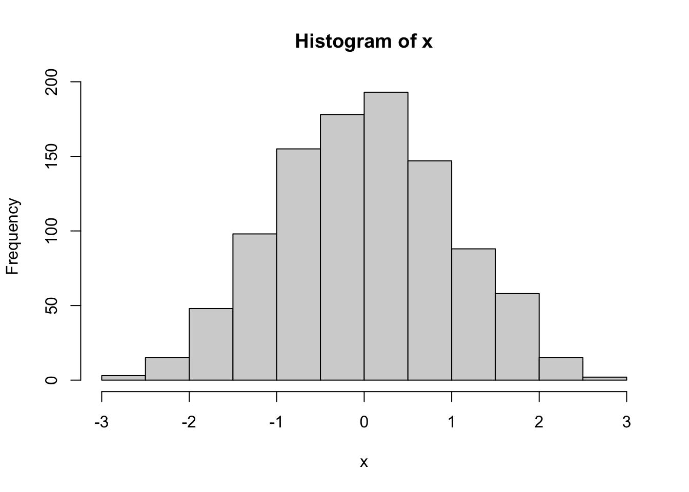
rnorm(1000) %>% hist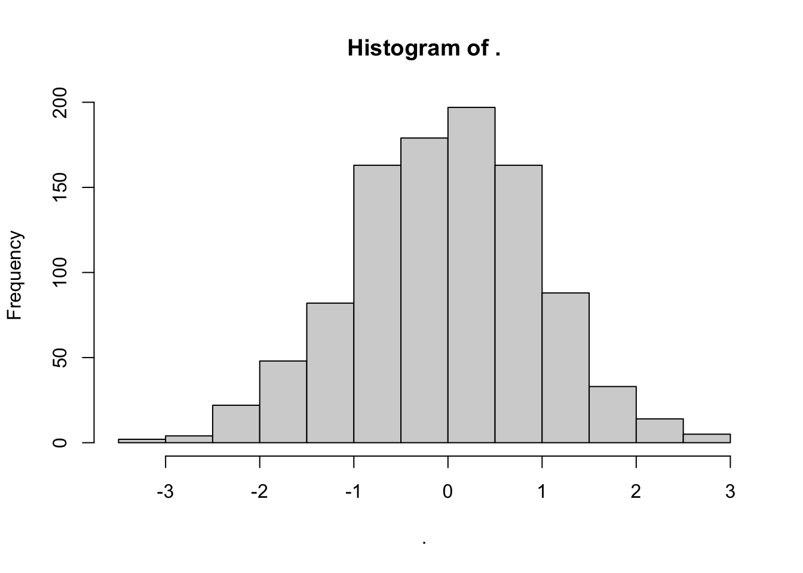
Now with the Florida data
t<-1:ncol(out)
plot(out[10,])
myreg<-lm(out[10,]~t)
summary(myreg)
Call:
lm(formula = out[10, ] ~ t)
Residuals:
Min 1Q Median 3Q Max
-0.289301 -0.062193 -0.007159 0.033154 0.243719
Coefficients:
Estimate Std. Error t value Pr(>|t|)
(Intercept) 3.5288806 0.0289650 121.83 < 2e-16 ***
t -0.0065709 0.0009334 -7.04 4.71e-09 ***
---
Signif. codes: 0 '***' 0.001 '**' 0.01 '*' 0.05 '.' 0.1 ' ' 1
Residual standard error: 0.1039 on 51 degrees of freedom
Multiple R-squared: 0.4928, Adjusted R-squared: 0.4829
F-statistic: 49.56 on 1 and 51 DF, p-value: 4.708e-09abline(myreg)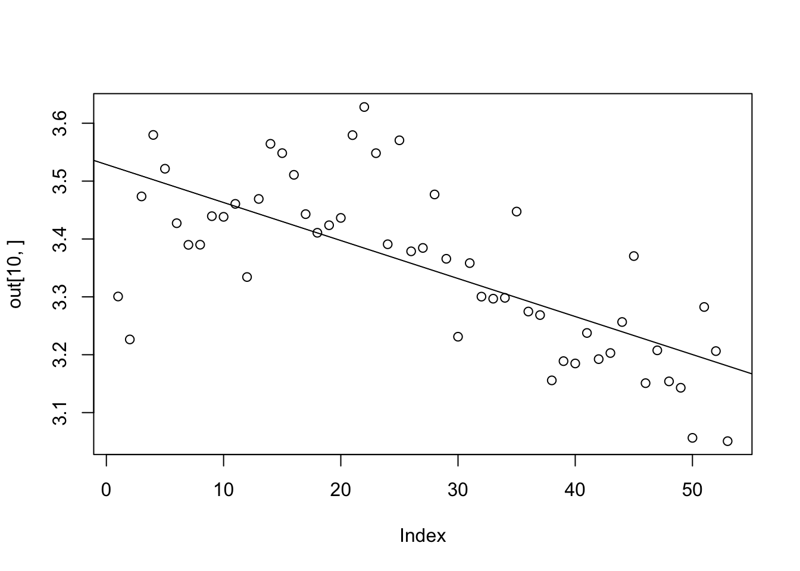
plot(out[10,])
lm(out[10,]~t) %>% summary %>%ablineWarning in abline(.): only using the first two of 8 regression coefficients
Base R
mtcars mpg cyl disp hp drat wt qsec vs am gear carb
Mazda RX4 21.0 6 160.0 110 3.90 2.620 16.46 0 1 4 4
Mazda RX4 Wag 21.0 6 160.0 110 3.90 2.875 17.02 0 1 4 4
Datsun 710 22.8 4 108.0 93 3.85 2.320 18.61 1 1 4 1
Hornet 4 Drive 21.4 6 258.0 110 3.08 3.215 19.44 1 0 3 1
Hornet Sportabout 18.7 8 360.0 175 3.15 3.440 17.02 0 0 3 2
Valiant 18.1 6 225.0 105 2.76 3.460 20.22 1 0 3 1
Duster 360 14.3 8 360.0 245 3.21 3.570 15.84 0 0 3 4
Merc 240D 24.4 4 146.7 62 3.69 3.190 20.00 1 0 4 2
Merc 230 22.8 4 140.8 95 3.92 3.150 22.90 1 0 4 2
Merc 280 19.2 6 167.6 123 3.92 3.440 18.30 1 0 4 4
Merc 280C 17.8 6 167.6 123 3.92 3.440 18.90 1 0 4 4
Merc 450SE 16.4 8 275.8 180 3.07 4.070 17.40 0 0 3 3
Merc 450SL 17.3 8 275.8 180 3.07 3.730 17.60 0 0 3 3
Merc 450SLC 15.2 8 275.8 180 3.07 3.780 18.00 0 0 3 3
Cadillac Fleetwood 10.4 8 472.0 205 2.93 5.250 17.98 0 0 3 4
Lincoln Continental 10.4 8 460.0 215 3.00 5.424 17.82 0 0 3 4
Chrysler Imperial 14.7 8 440.0 230 3.23 5.345 17.42 0 0 3 4
Fiat 128 32.4 4 78.7 66 4.08 2.200 19.47 1 1 4 1
Honda Civic 30.4 4 75.7 52 4.93 1.615 18.52 1 1 4 2
Toyota Corolla 33.9 4 71.1 65 4.22 1.835 19.90 1 1 4 1
Toyota Corona 21.5 4 120.1 97 3.70 2.465 20.01 1 0 3 1
Dodge Challenger 15.5 8 318.0 150 2.76 3.520 16.87 0 0 3 2
AMC Javelin 15.2 8 304.0 150 3.15 3.435 17.30 0 0 3 2
Camaro Z28 13.3 8 350.0 245 3.73 3.840 15.41 0 0 3 4
Pontiac Firebird 19.2 8 400.0 175 3.08 3.845 17.05 0 0 3 2
Fiat X1-9 27.3 4 79.0 66 4.08 1.935 18.90 1 1 4 1
Porsche 914-2 26.0 4 120.3 91 4.43 2.140 16.70 0 1 5 2
Lotus Europa 30.4 4 95.1 113 3.77 1.513 16.90 1 1 5 2
Ford Pantera L 15.8 8 351.0 264 4.22 3.170 14.50 0 1 5 4
Ferrari Dino 19.7 6 145.0 175 3.62 2.770 15.50 0 1 5 6
Maserati Bora 15.0 8 301.0 335 3.54 3.570 14.60 0 1 5 8
Volvo 142E 21.4 4 121.0 109 4.11 2.780 18.60 1 1 4 2# 1. Filter rows where mpg > 20
subset_data <- mtcars[mtcars$mpg > 20, ]
# 2. Select only mpg, cyl, hp columns
subset_data <- subset_data[, c("mpg", "cyl", "hp")]
# 3. Add new column kpg = mpg * 1.6
subset_data$kpg <- subset_data$mpg * 1.6
# 4. Order by descending mpg
subset_data <- subset_data[order(-subset_data$mpg), ]Or
subset_data <- subset(mtcars, mpg > 20, select = c(mpg, cyl, hp))
subset_data <- transform(subset_data, kpg = mpg * 1.6)
subset_data <- subset_data[order(-subset_data$mpg), ]Now with tidyverse
library(dplyr)
mtcars |>
filter(mpg > 20) |>
dplyr::select(mpg, cyl, hp) |>
mutate(kpg = mpg * 1.6) |>arrange(desc(mpg)) mpg cyl hp kpg
Toyota Corolla 33.9 4 65 54.24
Fiat 128 32.4 4 66 51.84
Honda Civic 30.4 4 52 48.64
Lotus Europa 30.4 4 113 48.64
Fiat X1-9 27.3 4 66 43.68
Porsche 914-2 26.0 4 91 41.60
Merc 240D 24.4 4 62 39.04
Datsun 710 22.8 4 93 36.48
Merc 230 22.8 4 95 36.48
Toyota Corona 21.5 4 97 34.40
Hornet 4 Drive 21.4 6 110 34.24
Volvo 142E 21.4 4 109 34.24
Mazda RX4 21.0 6 110 33.60
Mazda RX4 Wag 21.0 6 110 33.60Much better with
pak::pak("hadley/genzplyr")ℹ Loading metadata database✔ Loading metadata database ... done ℹ No downloads are needed✔ 1 pkg + 15 deps: kept 16 [5.5s]library(genzplyr)genzplyr loaded fr fr 💅
Your data wrangling is about to be bussin no capmtcars |>
yeet(mpg > 20) |>
vibe_check(mpg, cyl, hp) |>
glow_up(kpg = mpg * 1.6) |>
slay(desc(mpg)) mpg cyl hp kpg
Toyota Corolla 33.9 4 65 54.24
Fiat 128 32.4 4 66 51.84
Honda Civic 30.4 4 52 48.64
Lotus Europa 30.4 4 113 48.64
Fiat X1-9 27.3 4 66 43.68
Porsche 914-2 26.0 4 91 41.60
Merc 240D 24.4 4 62 39.04
Datsun 710 22.8 4 93 36.48
Merc 230 22.8 4 95 36.48
Toyota Corona 21.5 4 97 34.40
Hornet 4 Drive 21.4 6 110 34.24
Volvo 142E 21.4 4 109 34.24
Mazda RX4 21.0 6 110 33.60
Mazda RX4 Wag 21.0 6 110 33.60# Complete analysis that's absolutely bussin
mtcars |>
yeet(hp > 100) |> # Yeet the weak cars
vibe_check(mpg, cyl, hp, wt) |> # Vibe check our columns
glow_up( # Glow up the data
hp_per_ton = hp / (wt / 2),
efficiency = mpg / (hp / 100)
) |>
squad_up(cyl) |> # Squad up by cylinders
no_cap( # Get the real stats
avg_hp = mean(hp),
avg_mpg = mean(mpg),
avg_efficiency = mean(efficiency),
squad_size = n()
) |>
disband() |> # Disband the squads
slay(desc(avg_efficiency)) |> # Sort by slay factor
send_it(10) # A tibble: 3 × 5
cyl avg_hp avg_mpg avg_efficiency squad_size
<dbl> <dbl> <dbl> <dbl> <int>
1 4 111 25.9 23.3 2
2 6 122. 19.7 16.6 7
3 8 209. 15.1 7.67 14ggplot2 is based on ideas from the book “A grammar of graphics” by Leland Wilkinson and developed by Hadley Wickham, which also developed tidyverse.
library(ggplot2)
cars speed dist
1 4 2
2 4 10
3 7 4
4 7 22
5 8 16
6 9 10
7 10 18
8 10 26
9 10 34
10 11 17
11 11 28
12 12 14
13 12 20
14 12 24
15 12 28
16 13 26
17 13 34
18 13 34
19 13 46
20 14 26
21 14 36
22 14 60
23 14 80
24 15 20
25 15 26
26 15 54
27 16 32
28 16 40
29 17 32
30 17 40
31 17 50
32 18 42
33 18 56
34 18 76
35 18 84
36 19 36
37 19 46
38 19 68
39 20 32
40 20 48
41 20 52
42 20 56
43 20 64
44 22 66
45 23 54
46 24 70
47 24 92
48 24 93
49 24 120
50 25 85plot(cars$speed,cars$dist)
ggplot(data=cars, mapping=aes(x=speed,y=dist)) + geom_point(colour="red")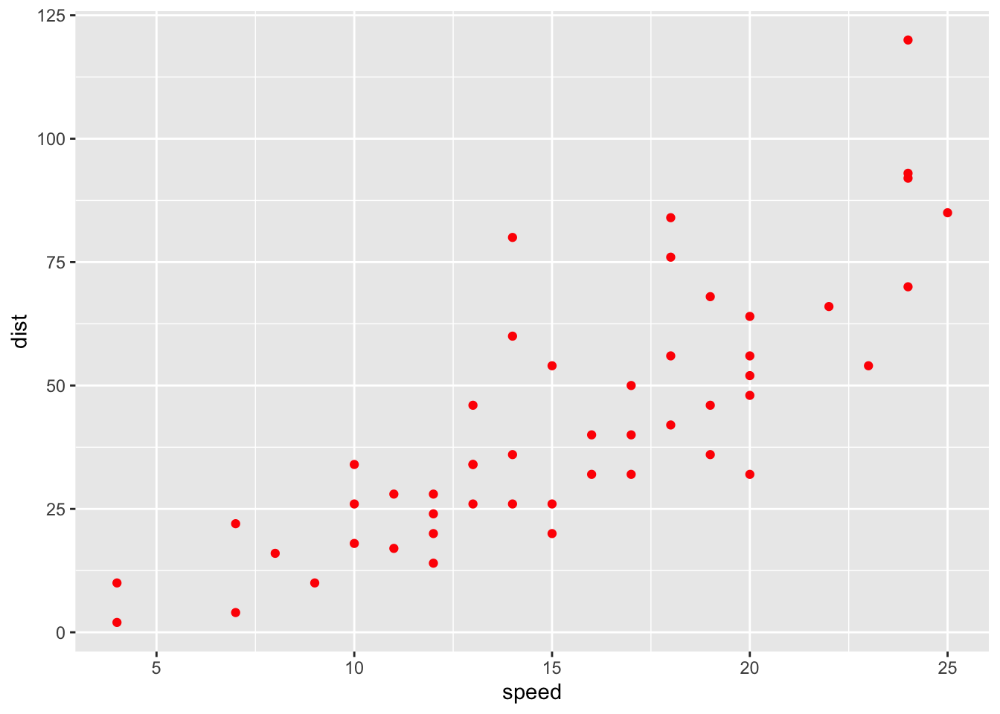
myplot <- ggplot(cars, aes(speed,dist))+
geom_point()+geom_line()
myplot
data(cars)
myplot <- ggplot(cars, aes(speed,dist))+
geom_point()+geom_smooth(method="lm")
myplot`geom_smooth()` using formula = 'y ~ x'
data(cars)
myplot <- ggplot(cars, aes(speed,dist))+
geom_point()+geom_smooth(method="lm")+scale_x_log10()+scale_y_log10()
myplot`geom_smooth()` using formula = 'y ~ x'
With tidyplot
library(tidyplots)
cars |> tidyplot(x=speed,y=dist) |>
add_data_points_beeswarm() |>
add_curve_fit(method="lm")`geom_smooth()` using formula = 'y ~ x'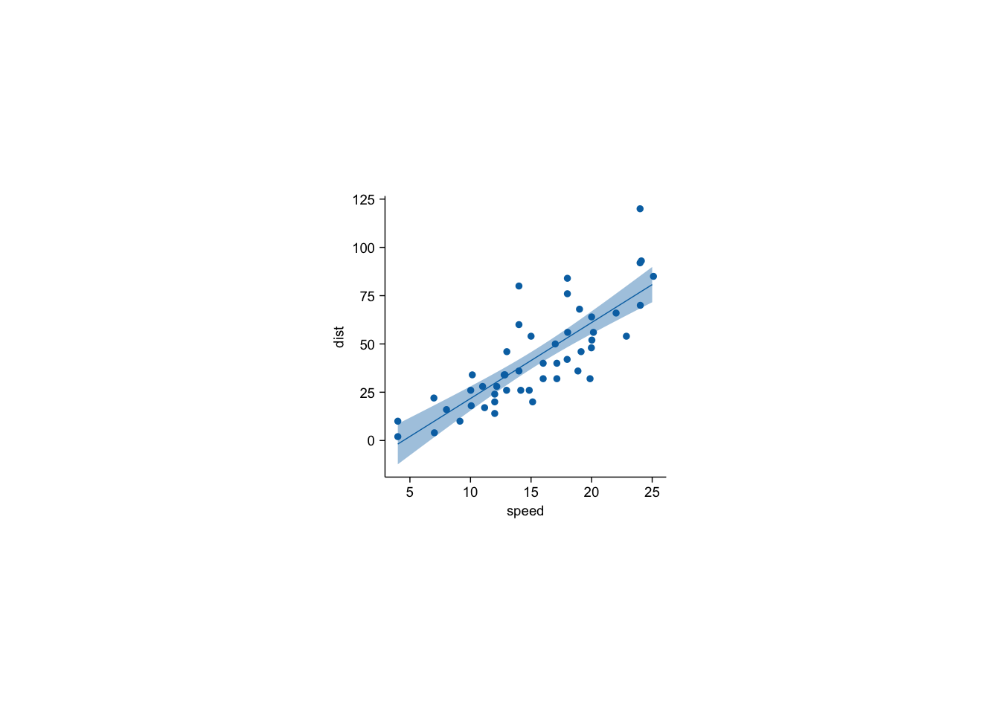
cars |> tidyplot(x=speed,y=dist) |>
add_data_points_beeswarm() |>
add_curve_fit()`geom_smooth()` using formula = 'y ~ x'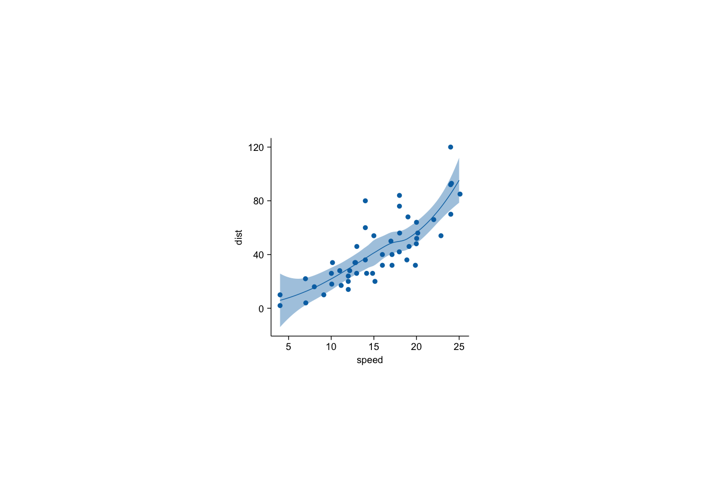
With the florida data
#ggplot
mat=cbind(t,out[10,])
colnames(mat)<-c("time","shannon")
mat<-as.data.frame(mat)
myplot <- ggplot(mat, aes(time,shannon))+
geom_point()
myplot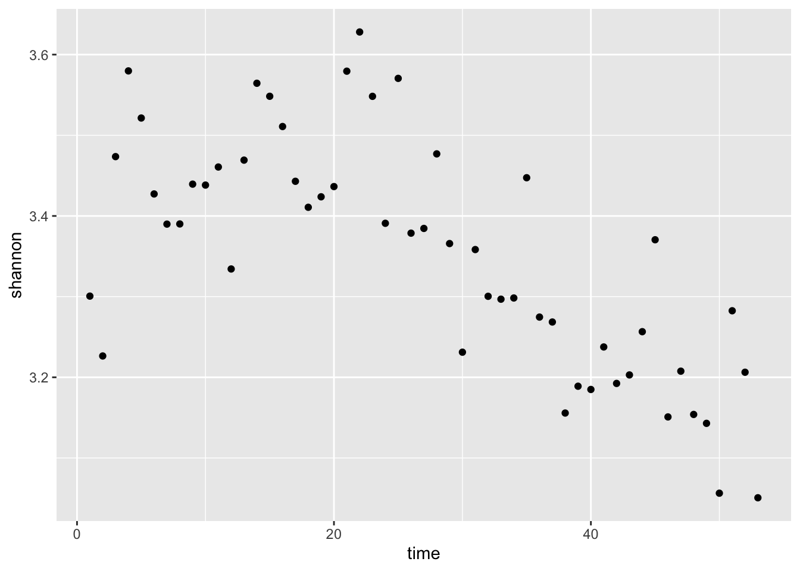
myplot <- ggplot(mat, aes(time,shannon))+
geom_line()
myplot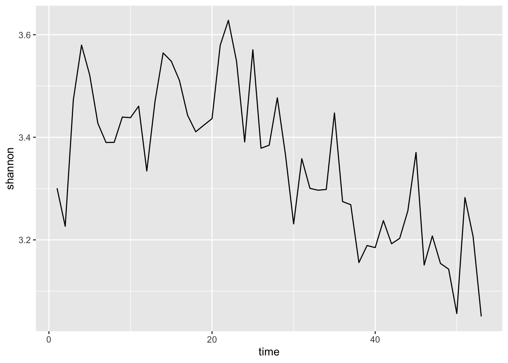
Authors: Corey Callaghan, Luise Quoss, Isabel Rosa.
First we load the library rgbif
library(rgbif)
library(tidyverse)Now we will download observations of a species. Let’s download observations of the common toad Bufo bufo.
matbufobufo<-occ_search(scientificName="Bufo bufo", limit=500, hasCoordinate = TRUE, hasGeospatialIssue = FALSE)Error in occ_search(scientificName = "Bufo bufo", limit = 500, hasCoordinate = TRUE, : could not find function "occ_search"Let’s examine the object matbufobufo
class(matbufobufo)Error: object 'matbufobufo' not foundmatbufobufoError: object 'matbufobufo' not foundIt is a special object of class gbif which allows for the metadata and the actual data to all be included, as well as taxonomic hierarchy data, and media metadata. We won’t worry too much about the details of this object now.
Let’s download data about octupusses. They are in the order “Octopoda”. First we need to find the GBIF search key for Octopoda.
a<-name_suggest(q="Octopoda",rank="Order")Error in name_suggest(q = "Octopoda", rank = "Order"): could not find function "name_suggest"key<-a$data$keyError: object 'a' not foundWe will only download 2000 observations to keep it simple for now. If you were doing this for real, you would download all data.
octopusses<-occ_search(orderKey=key,limit=2000, hasCoordinate = TRUE, hasGeospatialIssue = FALSE)Error in occ_search(orderKey = key, limit = 2000, hasCoordinate = TRUE, : could not find function "occ_search"Show the result
octmat<-octopusses$dataError: object 'octopusses' not foundhead(octmat)Error: object 'octmat' not foundCount the number of observations per species using tidyverse and pipes
octmat %>%
group_by(scientificName) %>%
summarise(sample_size=n()) %>%
arrange(desc(sample_size)) %>%
mutate(sample_size_log=log(sample_size,2)) %>%
ggplot(aes(x = sample_size_log)) + geom_histogram() Error: object 'octmat' not foundPlot the records on an interactive map. First load the leaflet package.
library(leaflet)
leaflet(data=octmat) %>% addTiles() %>%
addCircleMarkers(lat= ~decimalLatitude, lng = ~decimalLongitude,popup=~scientificName)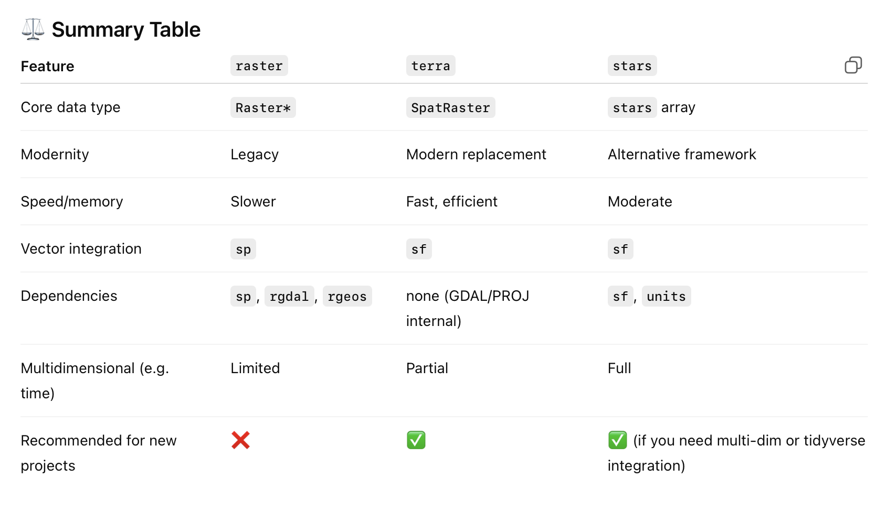